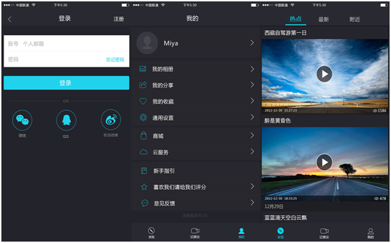
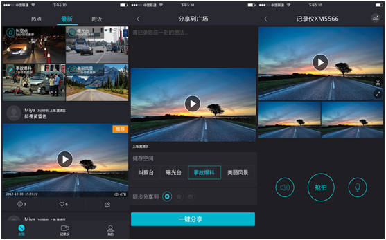

7月28日，备受瞩目的网约车政策靴子终于落地。当天下午三点，国家监管部门对外正式出台了《关于深化改革推进出租汽车行业健康发展的指导意见》和《网络预约出租汽车经营服务管理暂行办法》两部文件（以下分别简称《指导意见》《暂行办法》），网约车的合法地位得到明确肯定。
网约车新规出台 行车记录仪成标配
其中值得注意的是，《暂行办法》明确规定，7座及以下乘用车，需安装具有行驶记录功能的车辆卫星定位装置、应急报警装置。仔细解读《暂行办法》中的许可条件，我们不难发现这样几个关键词“具有行驶记录功能、“卫星定位”、“应急报警”，这在一定程度上回应了外界对网约车“安全问题”的质疑。行车记录仪可以记录行车中车内、车外情况。在记录路况的同时，也可以对车内的车主或乘客起到保护作用。尤其是在行车中遇到突发状况，记录仪可以为当事人于第一时间还原事发全过程，可谓必不可少。
新政策为市场注入“强心针”
《暂行办法》中强制规定网约车配备行车记录仪的政策，将对行车记录仪行业带来一波新的行情。从市场行情可以看出，行车记录仪近几年才开始在国内兴起，尤其是在2012年、2013年以后，它的销量开始出现井喷式增长。有调查结果显示，2015年行车记录仪全年出货量约为1000万套以上，不过，以目前1.7亿左右的汽车保有量为基数，国内行车记录仪的装载率还不到30%，市场远未达到饱和。可以预见，在未来几年，行车记录仪还将保持可观的持续增长，伴随着新政策的实行，将有可能迎来新一轮爆发。
目前市场上的大部分行车记录仪均是传统产品，其功能仅限于用来拍照、录视频，作用是拿来防碰瓷。国内两三百家行车记录仪厂商“各自为政”，品牌比较分散，绝大部分是贴牌生产，款式繁杂功能单一,这些传统的行车记录仪产品竞争格局已呈一片红海。
“懂”互联的行车记录仪将成市场新宠 众云视频技术方案助力升级
近年来，在摄像头技术、芯片技术的不断提升和移动互联网及物联网的发展带动下，行车记录仪市场已经发生了显著变化：新型智能行车记录仪产品开始出现。相较于传统的“傻瓜式”行车记录仪，这些新型智能行车记录仪在传统拍照、录影功能的基础上，新增了WIFI连接和手机APP控制，更加便于行车记录仪的使用，最新的产品甚至融入了社交功能。随着相关的产品和技术不断更新迭代，新型智能行车记录仪越来越受到市场的欢迎。
正是基于对市场前景和新型智能行车记录仪的看好，在多年的技术沉淀和服务优化基础上，众云视频于近期发布了新一代智能行车记录仪技术解决方案。众云视频能够为3G/4G行车记录仪、车内WiFi行车记录仪、车载智能后视镜方案商提供多种高级解决方案，包含设备间P2P连接、iOS/Android版本行车记录仪APP、实时视频观看、双向语音对讲、循环录制、停车安防、报警推送、位置信息上报、社交分享等功能，使用者无需任何设置即可一键实现手机与行车记录仪的Wi-Fi直连。
(众云为客户制作的行车记录仪APP界面)
众云还可根据厂商需要量身定制，技术方案更加注重体验和交互。各种新鲜玩法，在不忽略传统的“安全”、“保护”功能外，为司机和乘客们带来更多使用、驾乘乐趣。与传统的行车记录仪相比，可以说是从功能到智能的转变，从而使厂商的行车记录仪产品竞争力大大增强。
(众云可根据厂商需求定制开发软件功能和系统)
智能行车记录仪出来之后，有很多的想象空间，如做社区、安全产品等，随着汽车保有量的提升，新车标配和后市场加装的行车记录仪数量迅猛增长。行车记录仪市场将迎来新一轮爆发。众云视频也将会在促进行车记录仪市场发展中为各大厂商提供专业的技术方案和服务。
原创文章转载请注明：www.zvcloud.com